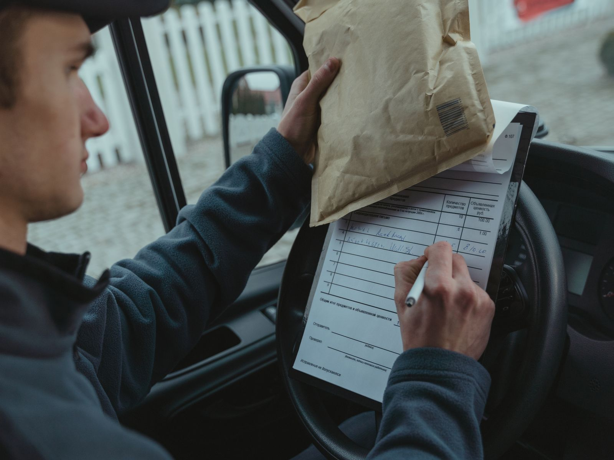

A Grafos nasceu numa semana em que a entrega não podia parar.
Antes de virar software, a Grafos foi um problema dentro de uma loja de material de construção. Por isso ela fala a língua de quem monta rota, atende cliente e sai para entregar.

De uma tela simples a 1,6 milhão de entregas por mês.
A Grafos não começou num laboratório nem numa planilha de investidor. Começou porque alguém precisava entregar e não sabia por onde ir.
O nome vem da Teoria dos Grafos, a matemática por trás da roteirização: pontos ligados por conexões. É assim que a logística funciona, e é o que a gente faz todo dia.
-
2020
A semana fora da loja
A mãe da Pietra e do Lorenzo precisou se afastar por uma semana da loja de material de construção da família. A Pietra assumiu as entregas e logo se perdeu nos endereços.
-
A primeira tela
Lado A, lado B
Ela pediu ao Pedro, que vinha de TI, uma tela simples para dividir as rotas entre um lado e o outro da cidade. Ficou bom, e a loja continuou usando.
-
O primeiro cliente
Uma distribuidora em Gaspar
Depois de um tempo melhorando o sistema dentro de casa, veio o primeiro cliente de fora: uma distribuidora de alimentos em Gaspar.
-
Hoje
Mais de 130 clientes
Mais de 70 mil rotas planejadas e 1,6 milhão de entregas processadas por mês, com a equipe em Blumenau. Dados de setembro de 2026.
Do jeito que começou.
Algumas coisas não mudaram desde a primeira tela.
Simples para quem usa
A primeira versão foi feita para alguém que não conhecia as rotas. Até hoje, a Grafos é pensada para o analista e o motorista usarem sem treinamento longo.
Suporte de perto, 24 horas
Cada cliente tem um grupo de WhatsApp com a nossa equipe. De dia, a resposta vem quase na hora. À noite, tem plantão. É o que os clientes mais elogiam nas avaliações.
Implantação junto com você
De 30 a 45 dias em média, acompanhando a integração com o seu ERP e o seu time de TI, até a operação rodar.
O que guia a Grafos.
- Missão
- Simplificar e otimizar operações logísticas com soluções eficientes, intuitivas e de alto valor para distribuidoras e autopeças.
- Visão
- Ser referência nacional e internacional em soluções logísticas, mantendo a excelência na experiência do cliente.
- Valores
- Simplicidade, eficiência, confiabilidade, inovação e proximidade com o cliente.
De Blumenau para clientes em vários estados.
A Grafos Tech é a P2 Soluções em Tecnologia Ltda, com sede em Blumenau, Santa Catarina. Faz parte do ecossistema catarinense de distribuição e tecnologia, como associada da ADAC, da ACATE e do polo Blusoft.
Quer conhecer quem está por trás da Grafos?
Agende uma demonstração e converse com a equipe que vai acompanhar a sua implantação.
Agendar demonstração